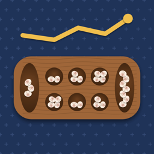

勝ちの見通しが分かるマンカラ
おたがい最善なら何点差？先読みの「見通し」が出るマンカラ。
6つずつの穴と、点の穴が2つある木の盤で、穴の石をまいて自分の点の穴に集めるマンカラ（カラハの決まり）です。いまの盤から、おたがいがいちばんよい手を打ち続けたら最後に何点差になるかを先読みして見せます。
- 見通し。「あなたが +3」のように、おたがい最善に打ったときの最後の点の差を、帯と数で出します。穴の下の小さな数は、そこに打ったあとの見通しです
- 押さえて、まいたあとを見る。穴を押さえている間は、まいたあとの石の数（＋いくつ）、最後の石が入る穴、もう1回・横取りになるかが見えます。指を離すと打ちます
- 終わったあとの線。1手ごとの見通しを線で見せ、見通しが3点以上下がった手に朱の点を付けます。よかった手と「この手の前へ」もどるボタンも出ます
- コンピュータ（やさしい・ふつう・つよい）と、または1台をふたりで。1つの穴の石（3〜6個）と、横取りのあり・なしを選べます。待った・記録もあります
- 登録・課金・オンラインの対戦はありません。記録はこの端末の中だけに保存します。画面のいちばん下に小さな広告が出ます（画面いっぱいの広告・動画の広告は出しません）